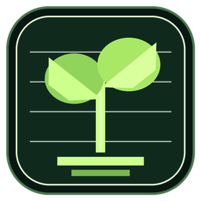

HunteraFarm em pausa
A versão independente não receberá atualizações durante a construção do novo aplicativo.
Comunicado oficial
A versão separada entra em pausa enquanto preparamos algo maior: o HunteraFarm fará parte do Altgrid.
Anúncios, novidades e atualizações serão publicados primeiro na comunidade.

HunteraFarm AltGrid
AltGridOs downloads da versão separada foram retirados enquanto construímos uma nova experiência para jogos idle. O Altgrid reunirá suas sessões e contará com o HunteraFarm dentro do aplicativo.
Fique por dentro
Entre na comunidade para acompanhar os anúncios e ser o primeiro a saber quando o Altgrid estiver pronto.
Participar da comunidade discord.gg/F5b5pmruU